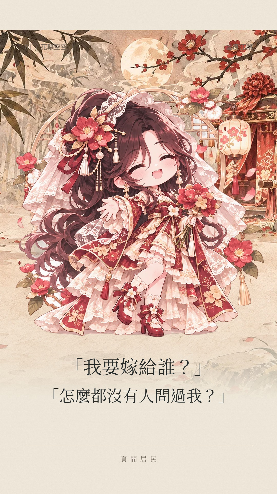
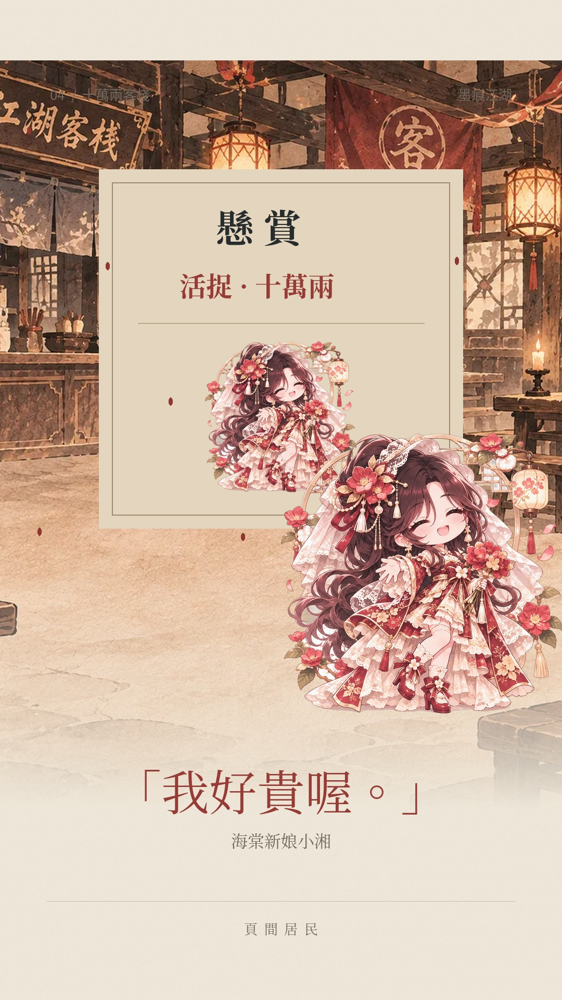
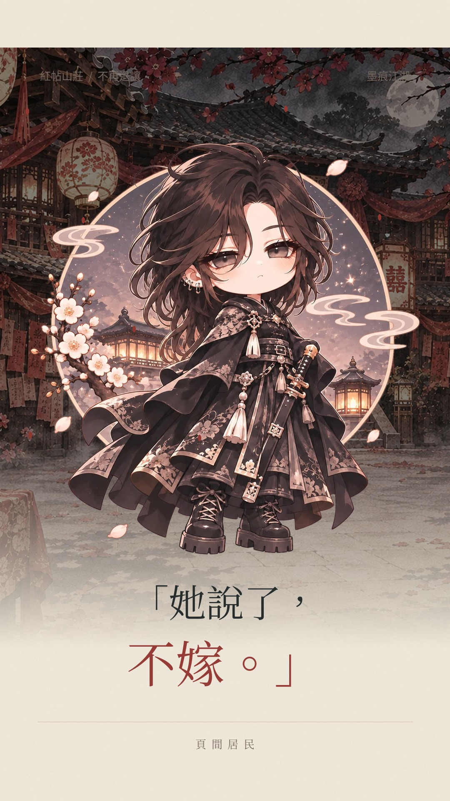
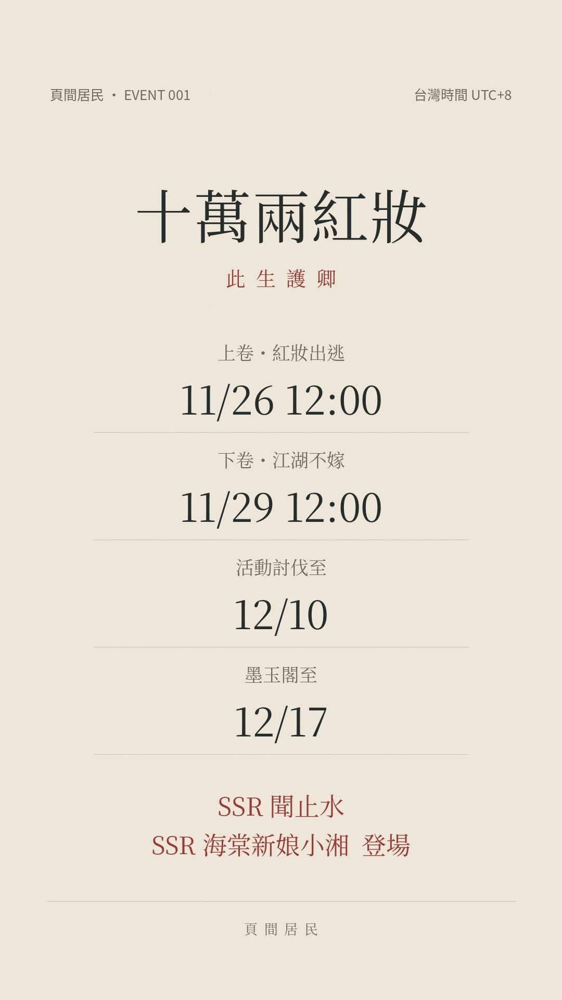

十萬兩紅妝
此生護卿
60 秒 · 9:16 直式 · 原創氛圍配樂與音效 · 無配音
點播放後可開啟聲音。影片內已含繁體中文字卡。
上卷 11/26 12:00 ｜ 下卷 11/29 12:00
討伐至 12/10 ｜ 墨玉閣至 12/17
以上均為台灣時間 UTC+8。
SSR 聞止水・海棠新娘小湘 登場
查看關鍵畫面




此生護卿
60 秒 · 9:16 直式 · 原創氛圍配樂與音效 · 無配音
點播放後可開啟聲音。影片內已含繁體中文字卡。
上卷 11/26 12:00 ｜ 下卷 11/29 12:00
討伐至 12/10 ｜ 墨玉閣至 12/17
以上均為台灣時間 UTC+8。
SSR 聞止水・海棠新娘小湘 登場



